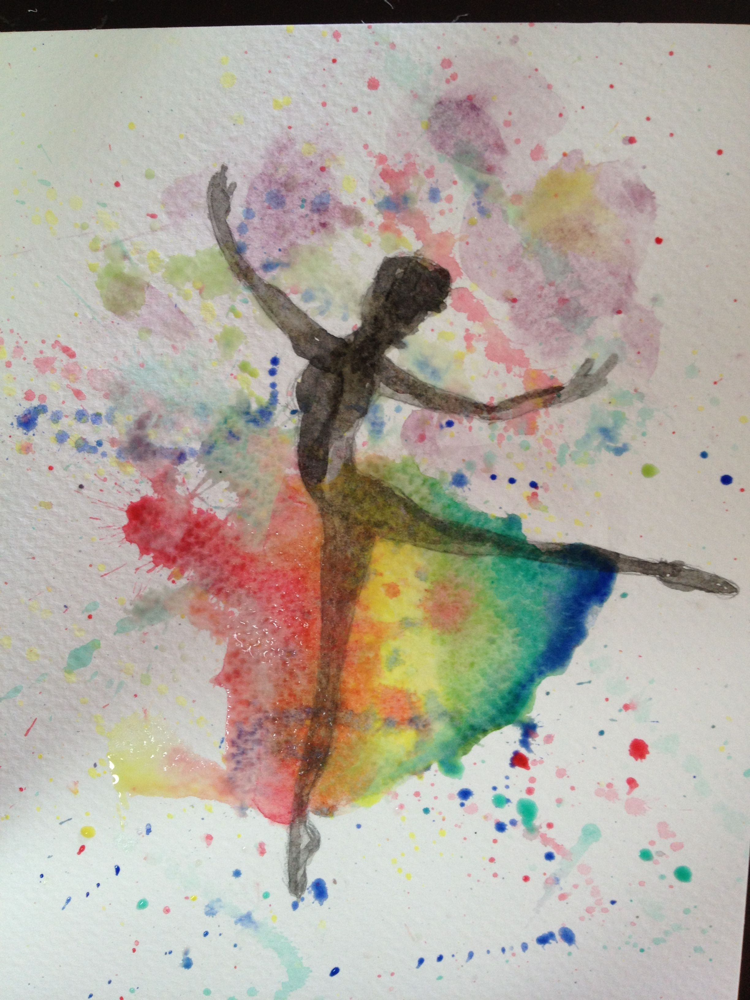
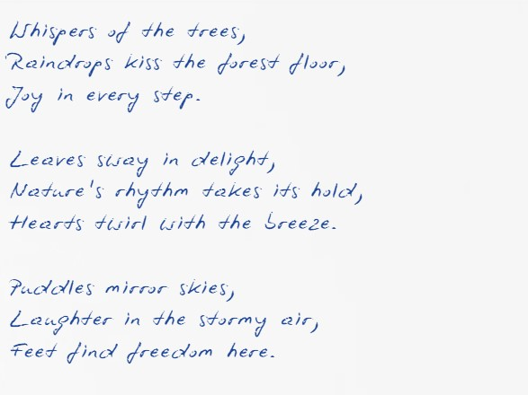

Dancing
Through Discovery
The beauty of dance lies in its versatility. It can be a joyful expression, a serious discipline, or a metaphor for life’s movements. In this section, we share personal experiments with dance in unexpected contexts, showing how it transforms understanding and sparks creativity.
Experiments and Stories
-
Silent Dance – Moving to an Inner Rhythm
What happens when there’s no music?○ I challenged myself to dance in complete silence, relying only on the rhythm of my heartbeat and breathing. Initially, I felt awkward, but soon I noticed an incredible awareness of my body and its movements. The silence amplified every gesture, making each step feel intentional and profound.
○ Dance isn’t about external cues—it’s about connecting with your inner rhythm and trusting your instincts. -
Dancing Words – Writing with Movement
Can movements be words?○ I tried using my body to “write” letters of the alphabet. Each curve of my arms and step of my feet represented a stroke of a pen. Combining these motions, I “spelled” out words like joy, freedom, and love.
○ Dance can become a visual language, capable of expressing thoughts and feelings in ways that words cannot. -
The Everyday Dance – Finding Choreography in Routine
What if life is a dance?○ I turned daily tasks into a dance. Folding laundry became a series of twirls and lunges; cooking became a rhythmic sway. My favorite was grocery shopping, where pushing the cart transformed into an improvised waltz.
○ Dance isn’t confined to a stage—it can be found in the ordinary movements of life.
Asking Others About Dance
-
Colleagues Opinions
I asked some of my colleagues from work “What does dance mean to you?”. Here are some responses:○ “I love that it is usually accompanied by a celebration. Whenever I dance, it’s like I’m fully in the moment, enjoying everything around me and just letting the music guide me.” – Maria, HR, 26
○ “Dance is how I let go of stress after a long day. For me, it’s like therapy, you turn on some music, start moving, and all the tension just melts away.” – Daniel, Frontend Developer, 34
○“It’s a way to connect with people without speaking. You don’t need words when you’re dancing; the movement says it all, and it brings people together in a way nothing else can.” – Alina, Business Analyst, 40 -
Community Experiment
I invited friends to interpret the word "dance" in their own way. Their responses were quite creative:○ Diana, 22, painted a watercolor picture of a ballerina, surrounded by a multitude of colors.


○ Ionut, 23, wrote a couple of haikus about dancing in the rain.
○ Ana, 22, created a playlist of songs that make her want to dance.
{kind=link}
{kind=link}